教養是一條漫長的道路，我們常常在「管」與「教」之間拉扯。當孩子情緒失控、動手打人、或是缺乏自信時，身為父母的我們該如何接住孩子的情緒，同時又能給予溫和而堅定的指引呢？
本文整理了多張實用的親職教養圖卡，從情緒覺察、正向教養思維、身教與陪伴，到自信心與挫折忍受力的培養，提供家長最具體的行動指南。
📌 一、情緒覺察與冷靜指引
當孩子情緒爆發時，要他們「立刻安靜」往往適得其反。我們需要先幫助孩子辨識情緒，並找到安全冷靜下來的方法。
1. 情緒溫度計
利用視覺化的「情緒溫度計」，陪孩子認識自己的情緒波動。當溫度過高時，就是需要啟動冷靜機制的訊號。
2. 1分鐘冷靜的情緒教育卡
當孩子處於易怒、生氣狀態時，可以透過「情緒教育卡」引導他們在 1 分鐘內做對冷靜三步驟：深呼吸、轉移注意力、或是使用專屬的冷靜小道具。
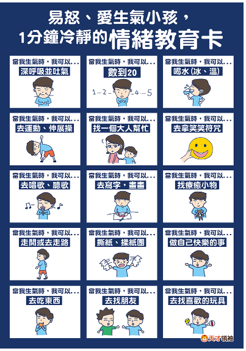
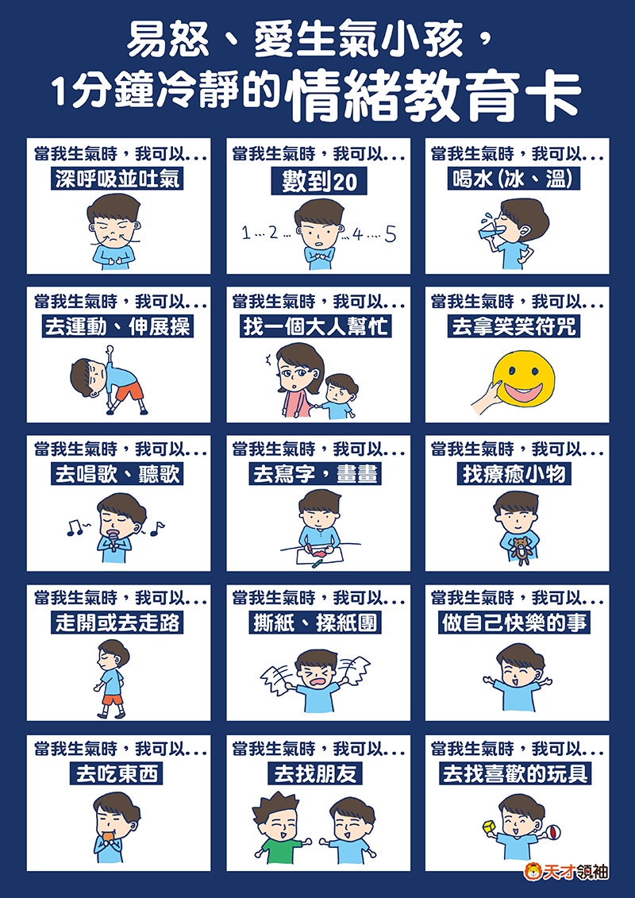
3. 當孩子愛發脾氣與打人時
當孩子發脾氣甚至動手打人，背後往往藏著「未被滿足的需求」或「無法表達的挫折感」。家長應先「同理情緒」，再「規範行為」，明確傳達「生氣是可以的，但打人是不對的」的界線。
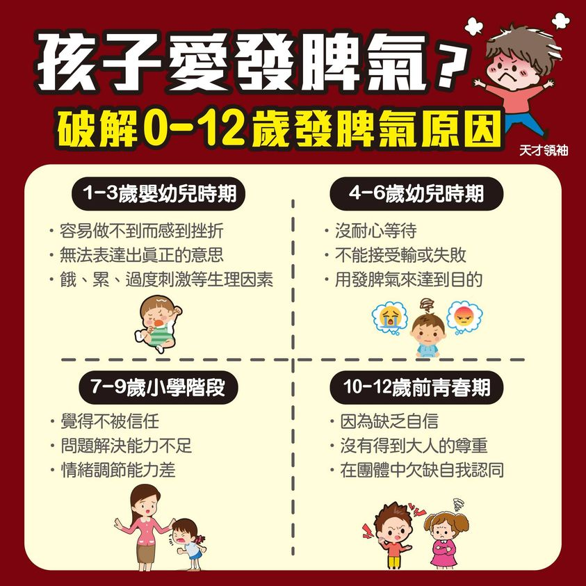
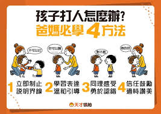
📌 二、正向教養與溝通思維
教養不是高壓的控制，而是溫和的引導。了解「管」與「教」的差別，能讓我們在教養路上更加優雅。
1. 你是「管」還是「教」？
管是限制與處罰，教是示範與引導。正向教養強調的是透過規範建立常規，同時保留孩子的自主性。
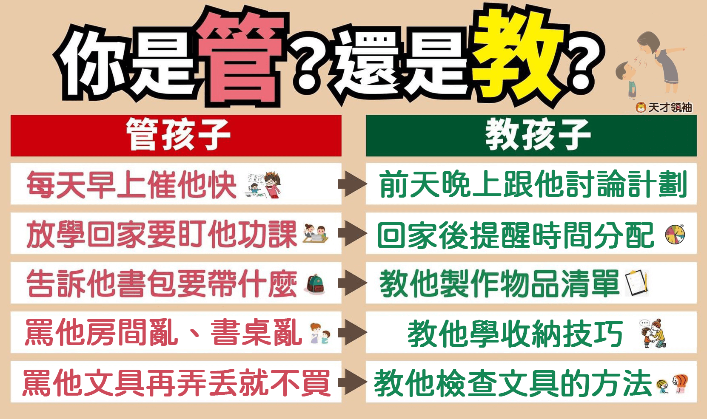
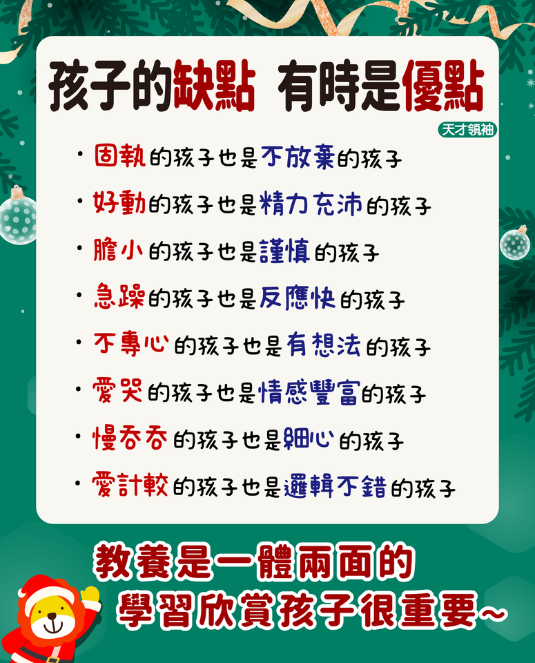
2. 陪伴的盲點：不對的陪伴方式
有時我們雖然「陪在身邊」，但若只是在滑手機或充滿說教，孩子仍會感受到被忽略，甚至用情緒反彈來吸引注意。真正的陪伴是專注且有品質的互動。
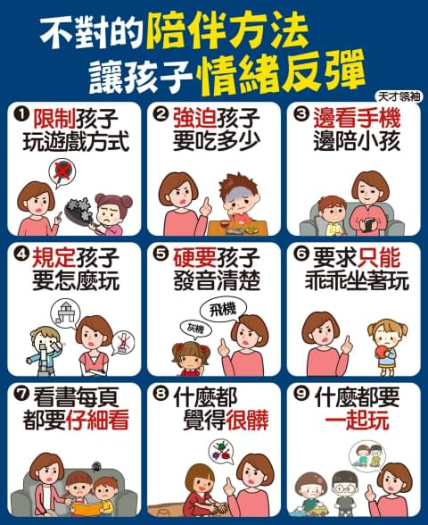
3. 打罵孩子之後的修復
難免有時家長會理智斷線而打罵孩子。事後的「修復關係」至關重要。主動向孩子道歉、說明自己生氣的原因，並重新保證對孩子的愛，能將衝突轉化為珍貴的情緒教育契機。
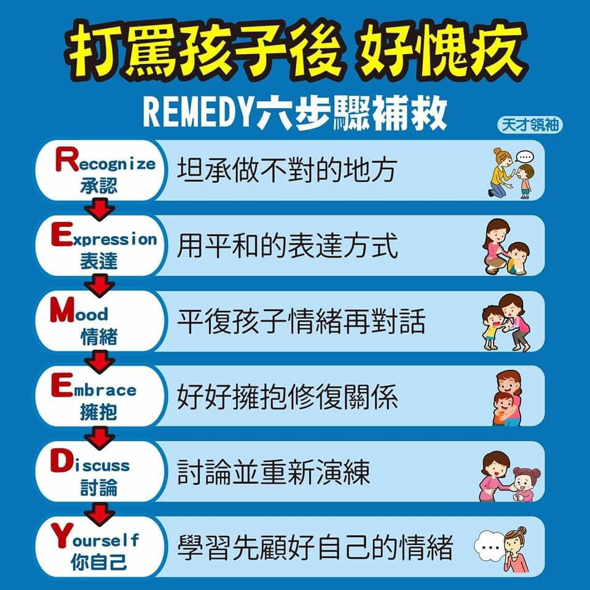
📌 三、身教與家庭的力量
父母是孩子的第一個老師，我們的一言一行，就是孩子最直接的學習範本。
1. 教孩子，先從身教開始
我們希望孩子情緒穩定、禮貌待人，自己就要先展現出這樣的行為。正向教養的 8 個行為，當父母做到了，孩子自然會跟著學。
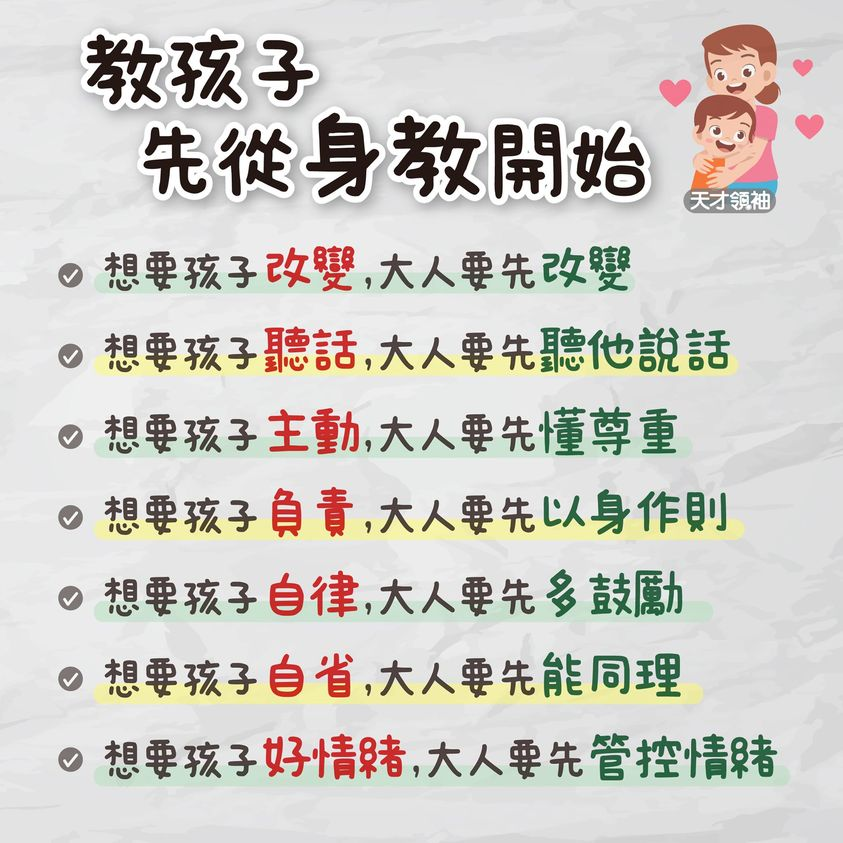
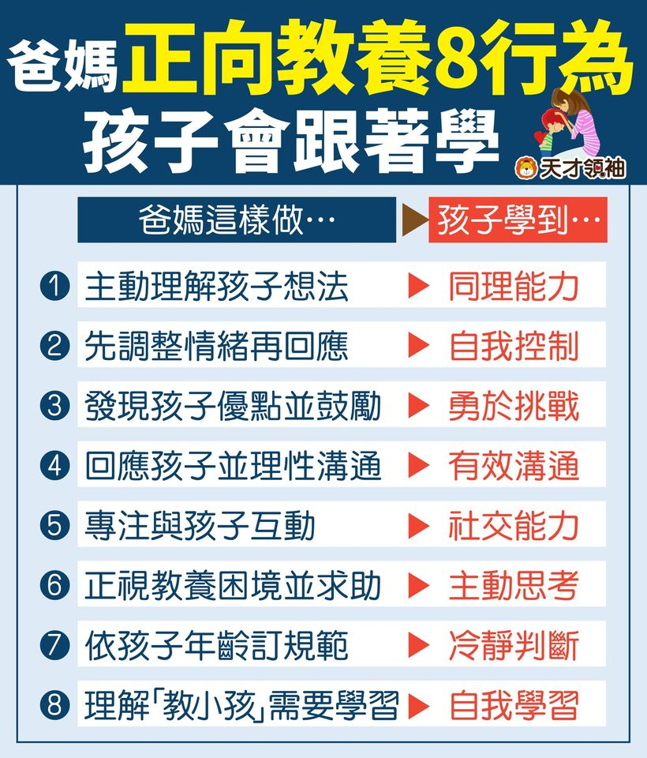
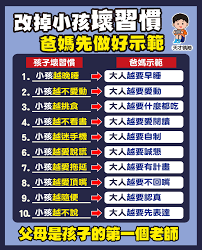
2. 爸爸的獨特影響力
在孩子成長的過程中，父親的陪伴能帶來不同的探索勇氣與安全感，爸爸對孩子的影響力無可取代。
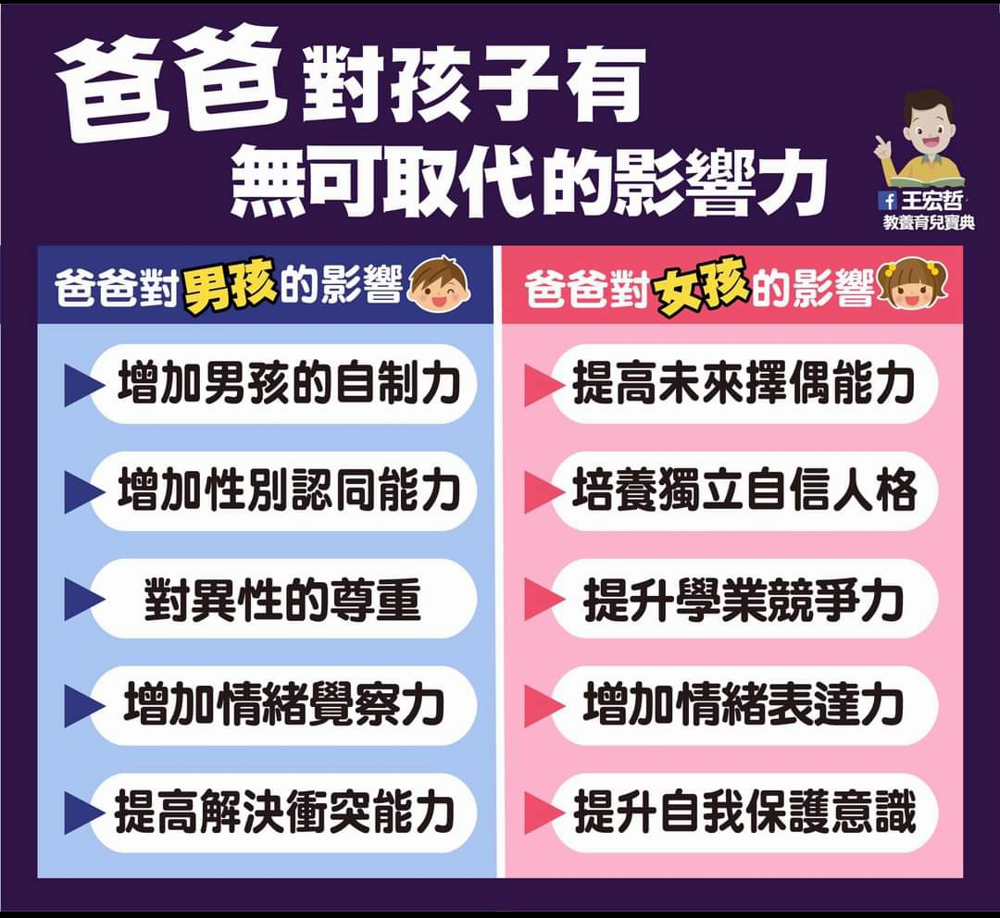
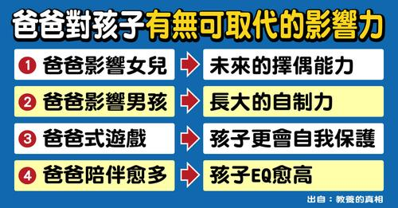
📌 四、自信心與內在動機的培養
如何讓孩子擁有健康的自信，並對學習與生活充滿主動性？關鍵在於我們的讚美方式與放手的勇氣。
1. 說對 10 句話，建立孩子自信心
不要只說「你好棒」，而是具體描述孩子的努力與進步。當孩子沒自信心時，用溫暖的言語接住他們，並鼓勵他們嘗試。
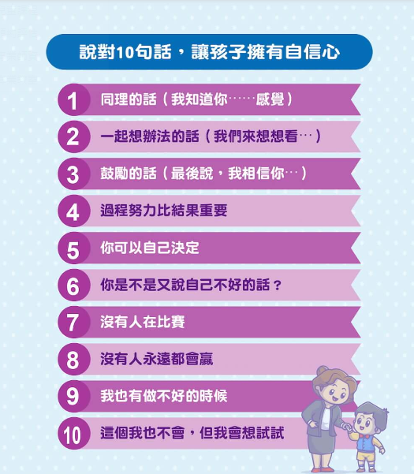
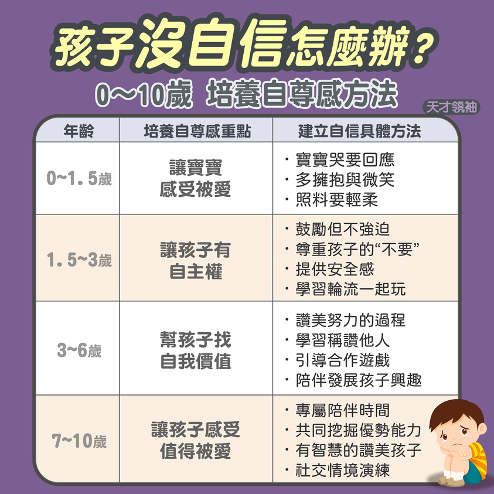
2. 獎勵的智慧：掌握 6 原則
獎勵能激發短期動機，但若做錯了（例如過度物質化、或是把本分當獎勵），反而會破壞孩子的內在動機，讓孩子變得更被動。
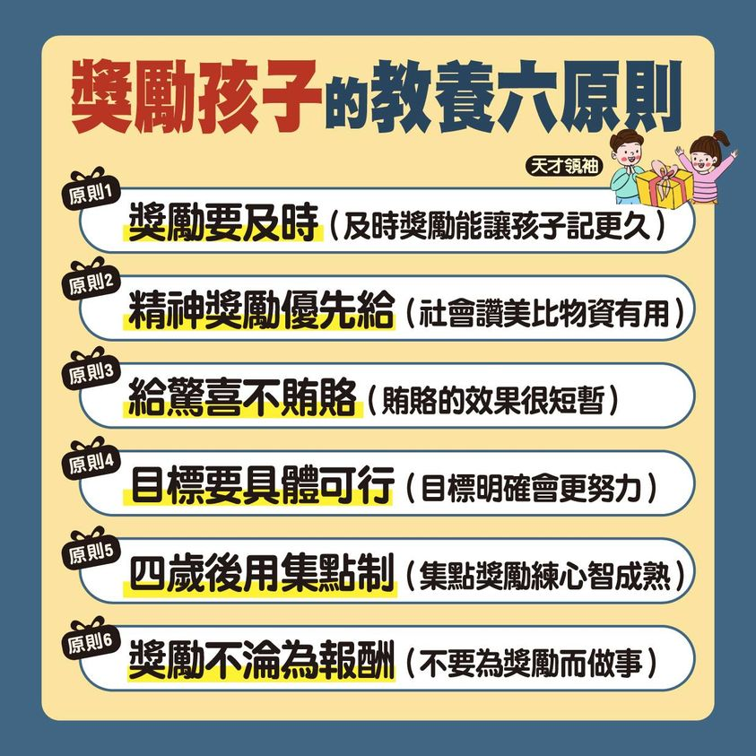
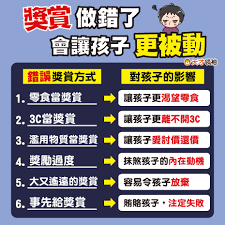
3. 放手的藝術：幫孩子做太多是毒藥
當我們出於愛心替孩子包辦所有事情時，其實剝奪了他們練習與學習的機會。看見孩子的內在天賦，相信他們的能力，適度放手才是最深沉的愛。
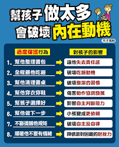
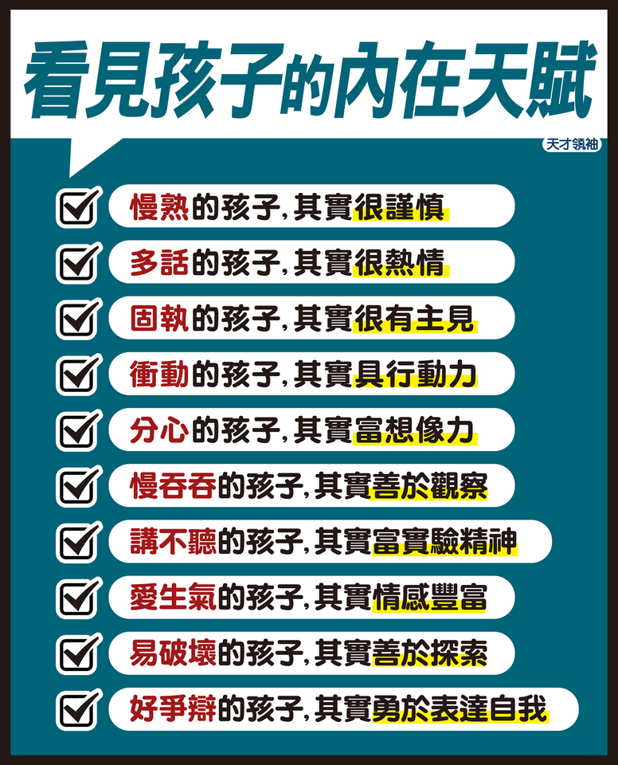
📌 五、面對挫折與引導犯錯
孩子犯錯、遭遇失敗時，正是培養「挫折忍受力」與「責任感」的黃金時刻。
1. 犯錯都怪別人？教孩子承擔責任
當孩子遇到不順心或犯錯時，習慣性地推卸責任，爸媽可以透過具體的引導步驟，陪孩子學會誠實面對、解決問題，並從失敗中學習。
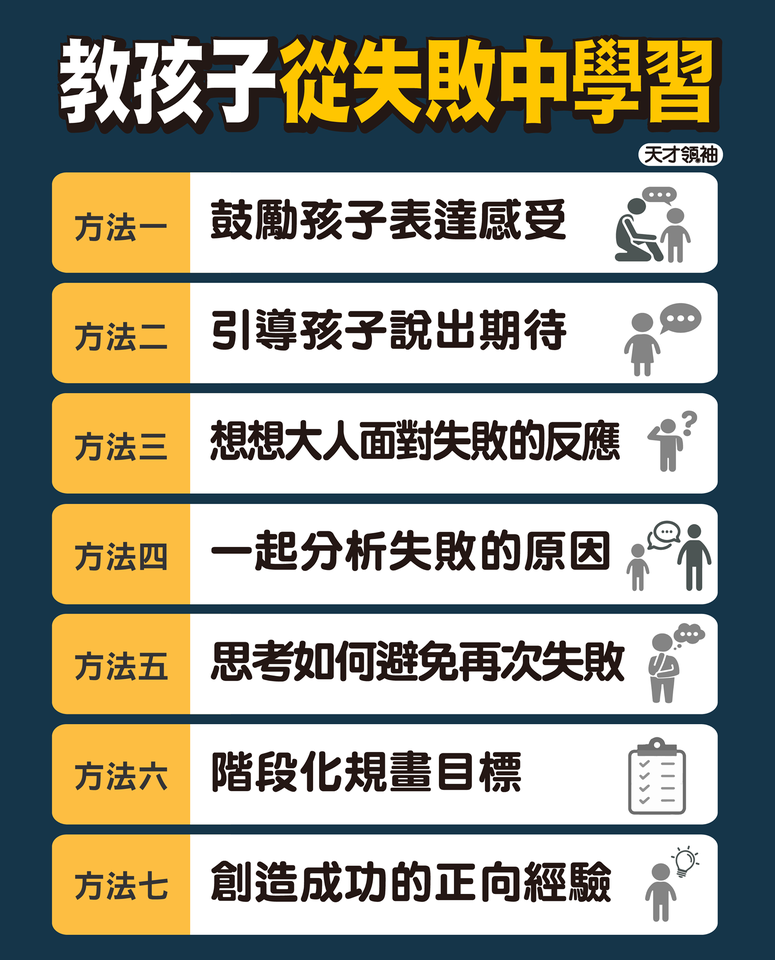
[!TIP]
親職教育悄悄話：
孩子的情緒教育是一輩子的功課，而最核心的養分就是父母「溫和且堅定」的愛。當我們能先安頓好自己的情緒，就已經成功了一半。讓我們一起陪伴孩子，在愛中慢慢長大！